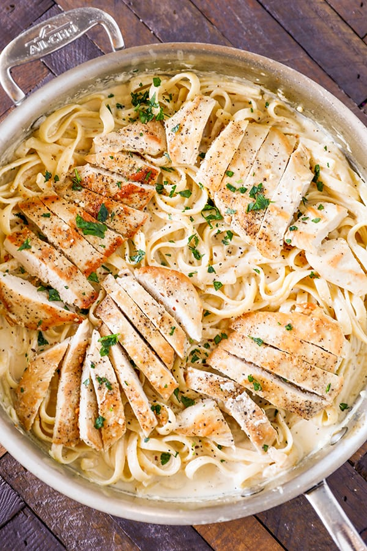

CHICKEN ALFREDO

- This is a great base recipe for all your one-pot pasta needs. Consider the following revisions when you feel like mixing it up.
- 1. If you're looking for a richer sauce, substitute heavy cream or half and half for the milk—never a bad move.
- 2. Big fan of dark meat? Swap in thighs for breasts! Just make sure you give them ample cooking time. Thighs take much longer in the pan, and actually cook best with a quick trip to the oven. Our garlic butter baked chicken thighs utilize this technique, and they're BOMB.
- 3. Get experimental with the noodles: fettuccini is a classic, but angel hair or spaghetti would work just fine! Just make sure whatever pasta you choose can be completely submerged in your cooking liquid.
- 4. Feel like you need some veg? Stir in a couple big handfuls of spinach and some halved grape tomatoes after the pasta is cooked.
- 5. If you're missing crunch, toast up some panko bread crumbs in a skillet with butter and garnish with a handful. This trick works for any pasta, the added texture really takes it over the top.
INGREDIENTS
- 2 tbsp. extra-virgin olive oil
- 2 boneless skinless chicken breasts
- Kosher salt
- Freshly ground black pepper
- 1 1/2 c. whole milk
- 1 1/2 c. low-sodium chicken broth
- 2 cloves garlic, minced
- 8 oz. fetuccini
- 1/2 c. heavy cream
- 1 c. freshly grated Parmesan
- Freshly chopped parsley, for garnish
DIRECTIONS
- 1|In a large skillet over medium-high heat, heat oil. Add chicken and season with salt and pepper. Cook until golden and cooked through, 8 minutes per side. Let rest 10 minutes, then slice.
- 2|Add milk, broth, and garlic to skillet. Season with salt and pepper and bring to a simmer. Add fettuccine, stirring frequently for about 3 minutes. Let cook until al dente, 8 minutes more.
- 3|Stir in heavy cream and Parmesan until combined. Simmer until sauce thickens.
- 4|Remove from heat and stir in sliced chicken. Garnish with parsley.